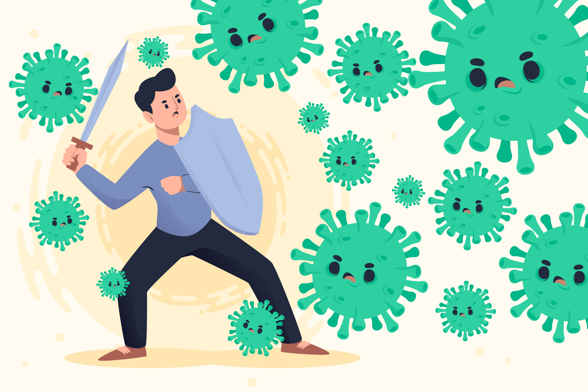
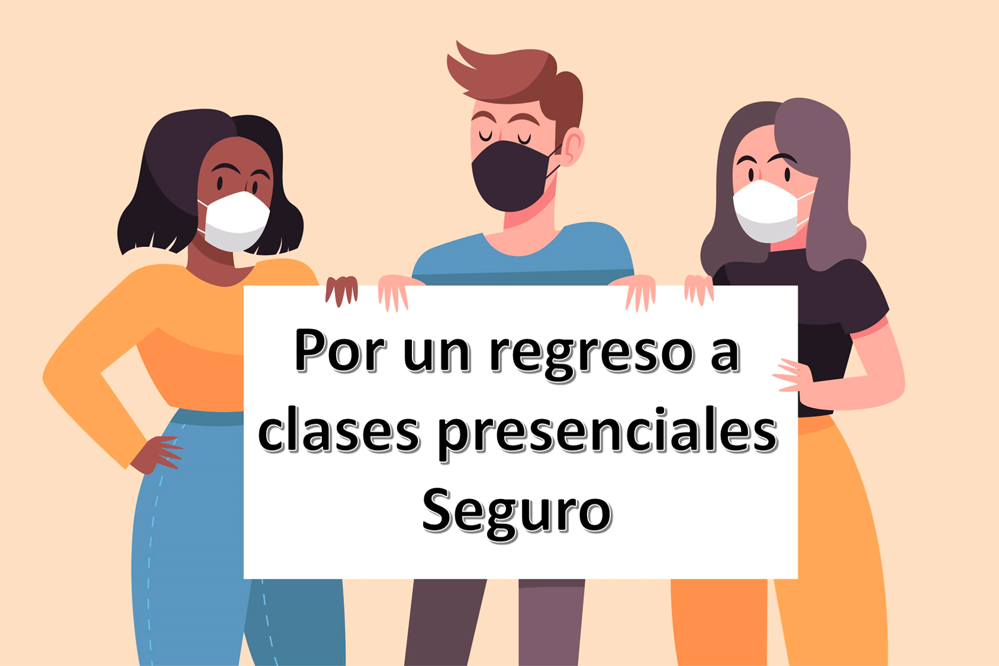

Página Gallardo Licea Evelyn Naomi
Bienvenida y Especificaciones Libros Leídos Reingreso a Clases Presenciales Datos¡Bienvenid@!
Espero disfrutes de la página tanto como yo disfrute hacerla.
Especificaciones
Se debe hacer una página que contenga lo siguiente:
- Dos titulos de dos formas diferentes
- Dos imagenes
- Dos links dentro de la página
- Un link fuera de la página
- Un link de imagen
- Incluir la información sobre el manual para el reingreso a clases
Libros que he leído este año
A lo largo de está cuarentena tuve mucho tiempo libre que trate de emplear en formar un nuevo y valioso hábito: la lectura. Da Click en alguna de las portadas de los libros que he leído para leer mi opinión.


Reingreso a Clases Presenciales
Filtros de seguridad
 Primer Filtro
En el hogar y antes de salir de casa
Continuamente, los estudiantes, el personal docente y administrativo así como sus familias, deberan atender e identificar y atender los sintomas de un posible contagio; en este contexto se recomienda que los estudiantes, personal docente y administrativo deben quedarse en casa si presentan alguno de los siguientes sintomas:
- Temperatura corporal mayor a 37.5%.
- Dificultad para respirar.
- Náuseas
- Vómitos
- Tos o congestión nasal
- Dolor de garganta
- Diarrea
- Dolor muscular
- Perdida del olfato y/o gusto
Segundo Filtro
En el acceso a las instalaciones
Con el objetivo de verificar que las personas que ingresen a las instalaciones no representen un riesgo de contagio para el resto de la comunidad educativa, se recomienda implementar un control de acceso con filtros sanitarios conforme a lo siguiente:
Establecer una o más personas encargadas del filtro sanitario en casa una de las puertas de acceso de la instituación, tanto para los accesos peatonales y vehiculares
- Las personas encargadas del filtro de ingreso deberán: tomar la temperatura, aplicar alcohol en gel al 60-70%, supervisar que se cumpla con la sana distancia y que porten equipo de protección personal
- Proveer a las personas encargadas del filtro sanhitario el equipo de protección necesario para su uso personal: cubrebocas, careta, guantes, alcohol en gel al 60-70%
- Proveer a las personas encargadas los insumos necesarios para realizar el filtro sanitario: alcohol en gel al 60-70% y termometro digital
- La institución deberá contar con estaciones de limpieza cerca de los lugares asignados para el desarrollo de las actividades, los cuales deberán contar con alcohol en gel al 69-70% y desinfectante de objetos
Tercer Filtro
En los espacios donde se realicen las actividades académicas, se deberá tomar en consideración lo siguiente:
- Al ingreso al aula, los estudiantes y docentes deberán alicarse alcohol en gel al 60-70% y deberán limpiar los espacios de trabajo antes de usarlos, con el material sanitizante disponible en el aula.
- Todos los estudiantes y docentes deberán usar cubrebocas durante clase.
- Las butacas, sillas y escritorios estarán previamente marcadas para su uso, respetando la sana distancia de 1.5 metros entre los estudiantes.
- Respetar la sana distancia entre los estudiantes y docentes en las aulas
- Mantener abiertas las ventanas y puertas durante las clases con el propósito de favorecer la ventilación
Medidas sanitarias
De igual forma al salir de casa se debe considerar lo siguiente:
- Usar cubrebocas en todo momento, protegiendo nariz y boca.
- Usar ropa preferentemente de manga larga.
- Llevar alcohol en gel al 60%-70%.
- Llevar pañuelos desechables y usarlos para proteger las manos al tocar cualquier superficie.
- Evitar pagar en efectivo; en caso de ser necesario, intenta pagar con el importe exacto.
- En caso de usar transporte público, evitar desplazarse en horas pico; tener las manos libres evitando el mínimo contacto con superficies y usar el alcohol en gel al 60%-70% antes y después de su trayecto.
- Establecer e implementar mecanismos para programar y controlar la entrada y salida de la comunidad educativa, evitando ingresos y egresos masivos a horas determinadas.
- Solo permitir el ingreso de estudiantes para sus actividades académicas, restringiendo el acceso a zonas de descanso, pasillos de circulacion o salas de espera.
- Demandar y asegurar la distancia física de 1.5 metros en las filas de ingreso en todo momento
- Separar los puntos de entrada y de salida para minimizar el contacto entre las personas

Conoce más acerca las medidas de prevención contra el covid-19
Grupos vulnerables
Las instituaciones educativas deberán contar con un registro de las personas de su comunidad educativa en situación de vulnerabilidad, ya que dichas personas debido a determinadas condiciones o caracteristicas de salud son más propensar a desarrollar una complicación en su salud.
Conforme al acuerdo emitido por la Secretaría de SAlud en este grupo están las mujeres embarazadas o e estado de lactancia, personas con obesidad, personas mayores de 60 años, personas con diagnóstico de hipertensión arterial, diabetes mellitus, enfermedad cardíaca o pulmonar crónicas, inmunosupresión (adquirida o provocada), insuficiencia renal o hepática, infección por VIH, tratamiento quimioterapéutico para el cáncer.
Se sugiere suspender o flexibilizar la asistencia de estudiantes o colaboradores en situación de vulnerabilidad que pueden desarrollar una complicación por un posible contagio por COVID-19.
Gracias por visitar
Gallardo Licea Evelyn Naomi
Progración 5"F"
Desarrolla aplicaciones web con conexiones a bases de datos